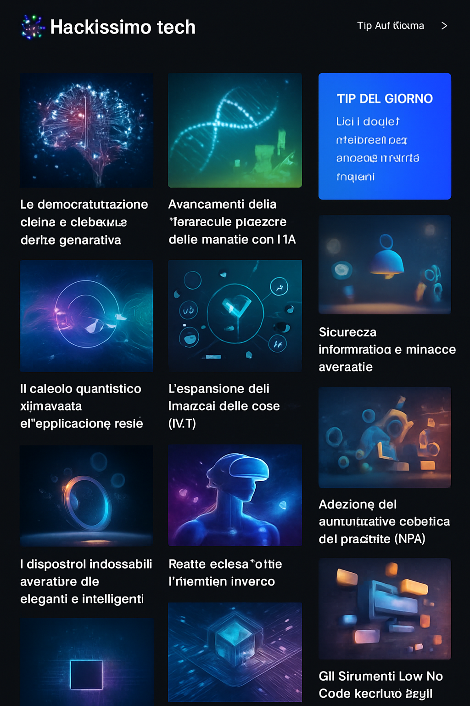

Hackissimo.tech
L'Internet delle Cose in crescita
Il mondo è sempre più connesso: si stima che entro il 2025 ci saranno oltre 27 miliardi di dispositivi legati all’Internet delle Cose (IoT). Non parliamo solo di smartphone e altoparlanti intelligenti, ma anche di sensori industriali, veicoli autonomi, macchinari agricoli e infrastrutture urbane. L’IoT consente alle aziende di monitorare in tempo reale ogni aspetto delle proprie operazioni: dal consumo energetico ai tempi di produzione, dalle condizioni ambientali alla localizzazione di merci e persone. Grazie all’analisi dei dati raccolti da questi dispositivi è possibile migliorare la qualità dei prodotti, ridurre gli sprechi e prevenire guasti costosi.
Secondo gli analisti, il mercato dell’IoT aziendale potrebbe superare i 480 miliardi di dollari entro il 2027 e oltre il 60 % delle imprese riporta un ritorno sull'investimento in meno di tre anni. Nell’industria manifatturiera l’Industrial Internet of Things (IIoT) permette di implementare la manutenzione predittiva: i sensori monitorano le vibrazioni e la temperatura delle macchine e avvisano quando è necessario intervenire, evitando fermi imprevisti. Nelle città, reti di sensori controllano l’illuminazione, il traffico e la qualità dell’aria, contribuendo a ridurre incidenti e furti. Anche l’agricoltura beneficia dell’IoT con sistemi che ottimizzano l’irrigazione e la distribuzione di fertilizzanti.
La diffusione dell’IoT solleva però questioni di sicurezza e sostenibilità. Ogni dispositivo connesso rappresenta un potenziale punto d’ingresso per gli hacker, mentre il flusso continuo di dati richiede infrastrutture di rete e cloud efficienti. Le soluzioni emergenti includono l’uso dell’edge computing, che elabora i dati vicino alla fonte per ridurre la latenza e alleggerire il traffico verso i data center, e l’adozione di standard di cybersecurity specifici per i dispositivi IoT. Allo stesso tempo, si cercano modi per progettare sensori a basso consumo energetico e riciclabili. La sfida sarà conciliare connettività pervasiva e responsabilità ambientale, garantendo che la crescita dell’IoT porti benefici duraturi alle comunità e all’economia.
← Torna alla home